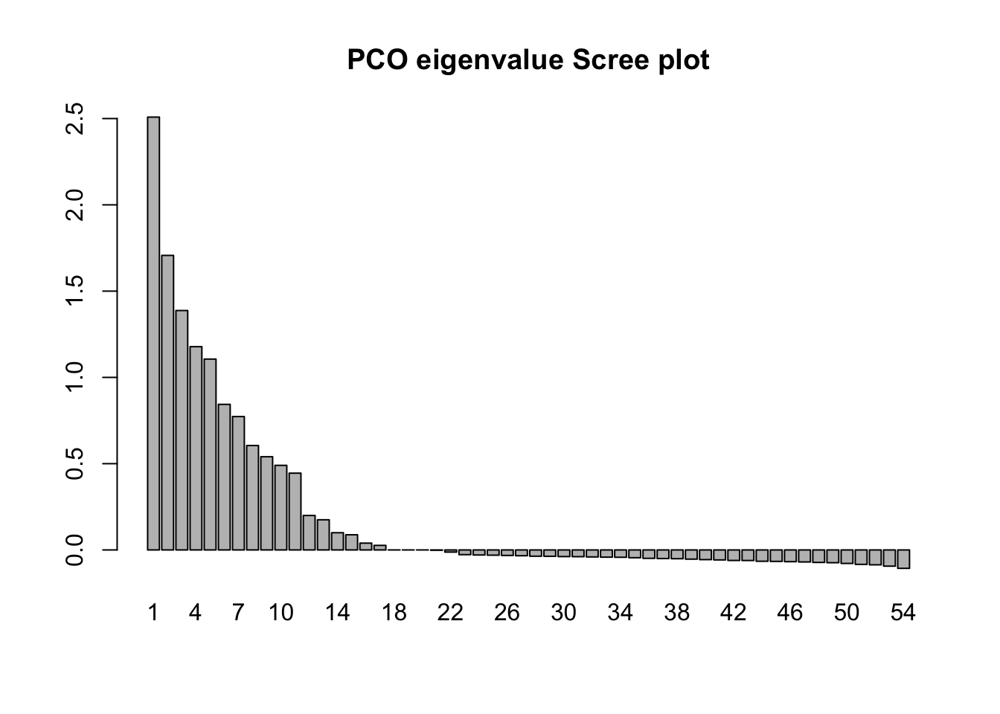
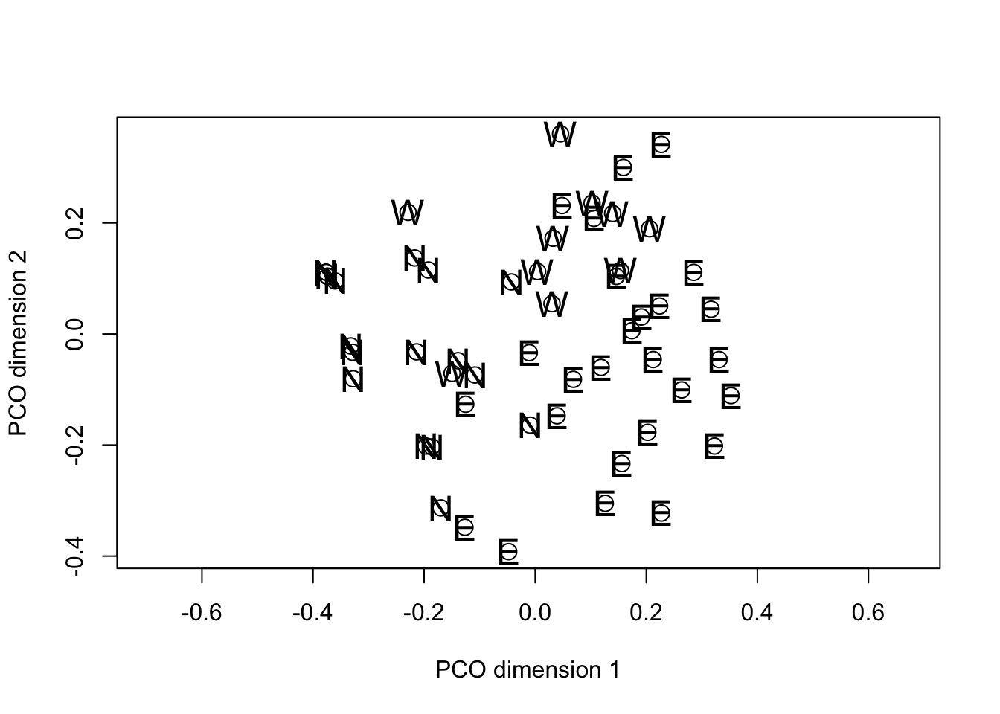
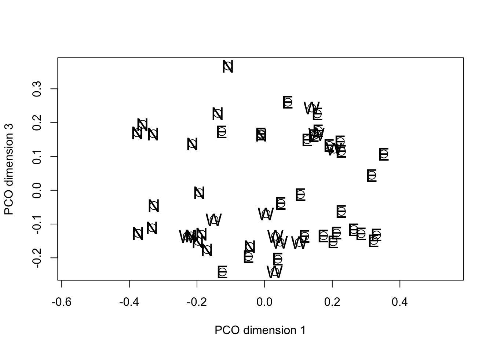
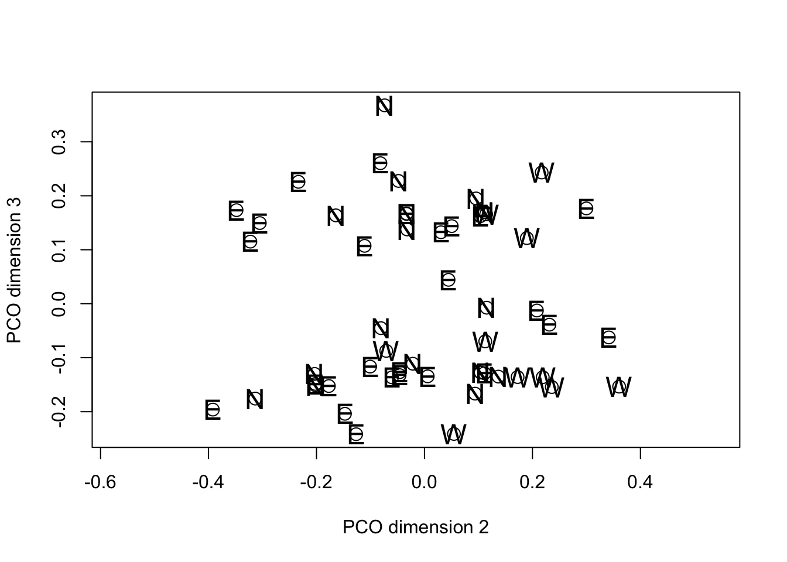
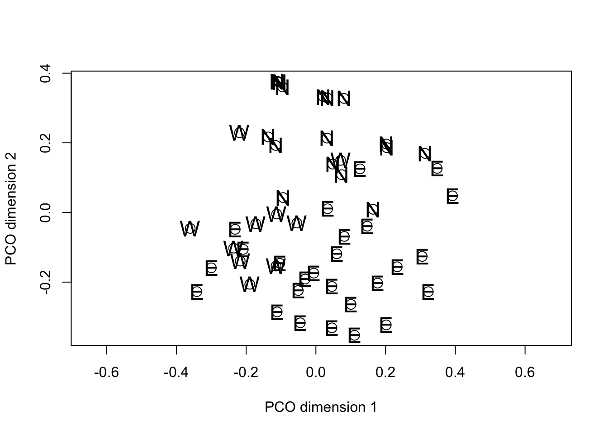
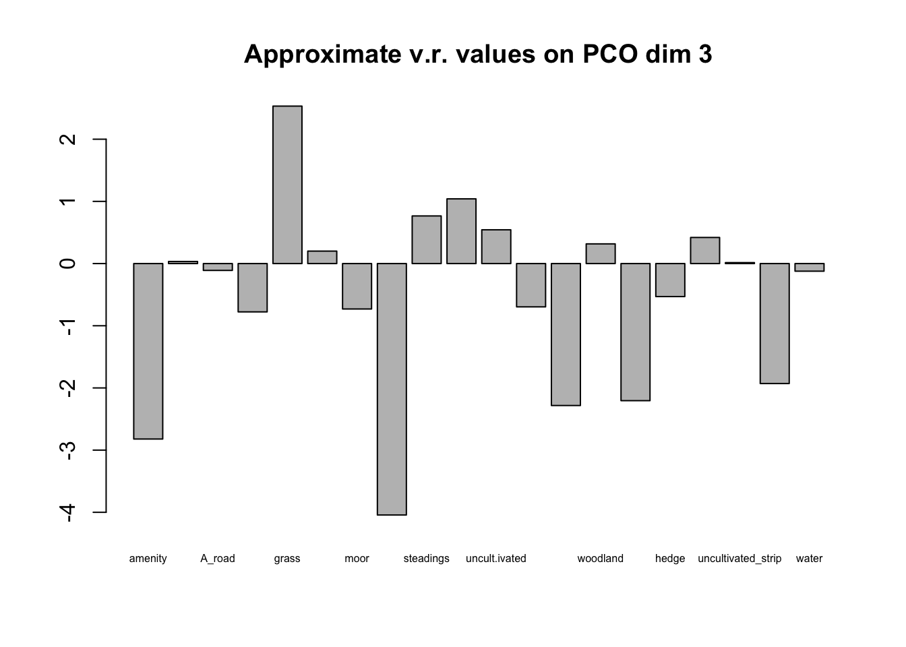

Principal coordinates analysis (also known as multidimensional scaling or classical multidimensional scaling) was developed by John Gower (1966). The underlying mathematics of PCO and PCA share some similarities (both depend on eigenvalue decomposition of matrices) but their motivations are different and the details of the eigenvalue analysis differ between the two methods. Whereas in PCA we typically interested in learning about the major relationships among a set of objects and how that relationship is determined by a set of variables, in PCO the interest is primarily in the similarity among the objects and the individual data variables are of secondary importance. For this reason, the aim of PCO is often described as reduction in dimensionality, while retaining the important information about relationships among a set of objects. In the branch of multivariate statistics associated with PCO, similarity , \(S\)and distance \(D\) are defined as complements of one another so \(S=1-D\).
The data structure analyzed in a PCO is a similarity (or distance) matrix for a set of objects. The similarity (distance) matrix is constructed from the data variables. The steps in the analysis are therefore:
The base stats package in R gives us a basic set of tools to do a PCO
analysis without having to load specialized packages1. The
dist() function calculates a distance matrix from a data
frame of objects by variables using one of its inbuilt distance metrics
(more on this below). The cmdscale() function then takes
the distance matrix generated by dist() and performs a
classical PCO. Then, as with nearly all multivariate methods, the output
from the PCO needs to be examined in graph form to interpret the result
of the analysis.
The point of PCO is to let us see how similar objects are to one another on the basis of several variables simultaneously. As already noted the idea of similarity here is a kind of statistical opposite of distance, which raises the question of exactly what we mean by the distance between objects in any specific case. Since our interpretation of the PCO results will depend on the distance matrix we give the PCO algorithm to analyze, the choice of how to calculate the distance (similarity) matrix is an important step. Distance matrices are also the central data object in cluster analysis (which we will deal with next) so the issue of how to construct them deserves some attention.
We’re all familiar with the Euclidean concept of distance. If we have measurements on two objects for a single continuous variable (say, lesion area for rust pustules) we can express the distance between any two objects simply as the absolute value of the difference between the values. If we have measurements on two continuous variables, we have a familiar two-dimensional space (one variable on the x-axis, the other on the y-axis) and the distance between any two objects \((i,j)\) in that space is given by the well-known formula from Euclidean geometry:\[ D_{i,j}=\sqrt{\left(x_{i}-x_{j}\right)^{2}+\left(y_{i}-y_{j}\right)^{2}}\]
This concept of distance can be extended to as many dimensions (or variables) as we want by taking the \(n^{th}\) root if we have \(n\) variables. The Euclidean distance metric is sensitive to extreme values and a variety of other metrics which are conceptually similar, but differ in the detail of the arithmetic. For example, the City Block metric (sometimes referred to as the Manhattan distance metric) produces similar results to the Euclidean metric but is less sensitive to outliers. For variables that are discrete, but ordinal (so they take on an increasing series of fixed, discrete values) the City Block metric may be a better choice than the Euclidean. Both the Euclidean and City Block metrics are special cases of the Minkowski metric, all three are available as options in the base stats dist() function.
In the case of binary variables the concept of distance (or
similarity) is slightly different. Most of the commonly used metrics for
binary data are variations or elaborations on the idea of the Hamming
distance between to objects. Suppose we have two objects for which
we have measured a single binary variable. The possible pairs of values
are (0,0), (1,0), (0,1), and (1,1). The corresponding Hamming distances
are 0 ,1, 1, and 0; the Hamming distance measures the number of pairwise
differences between a pair of strings of equal length. So. if we have
\(n\) binary variables measured on a
pair of objects at the variables differ at \(x\) positions the Hamming distance can be
expressed either a \(x\) or as \(D=\frac{x}{n}\). In the second format,
similarity can be calculated simply as \(S=
1-D\). The binary option in the dist()
function calculates a Hamming-like distance measure that ignores (0,0)
cases and calculates the count of differences only for variables where
at least one of the objects being compared has a “present”
score. In that respect it is conservative in that mutual absences of a
character are not interpreted as implying a similarity between two
objects, a feature that it shares with, for example, Jaccard’s
coefficient.
A distance measure calculated in this way won’t conform to Euclidean geometry. This isn’t an issue in and of itself because the primary concern is that any distance matrix is self-consistent, but since the output from a PCO will ultimately be interpreted through inspection of distances between points on graphs, it is important to recognize that the initial distance matrix may not be Euclidean and accordingly the low-dimensional projection generated by the PCO may be a rather poor approximation of the actual distances among the objects. We will see how to detect this departure of Euclidean distance in the scree plot of the eigenvalues in the PCO solution. Note that it is very common for this to happen.
The data in this example come from the same survey of wheat crops in Scotland as the disease data we looked at with PCA. In addition to looking at which problems turned up in each wheat crop the survey team also collected a standard set of information about the immediate surroundings of the field and its local setting. For example, whether it was bordered by post and wire fences, stone walls, grass banks, hedgerows etc, and whether the surrounding land use included neighboring wheat crops or other types of cropping and so on. The data set we use here comprises 31 binary (presence/absence) variables recorded on 54 fields spread over three regions.
The following code block lets the data file be loaded and then constructs a distance matrix, carries out the PCO and generates a scree plot of the eigenvalues and some plots of the scores for the fields on the PCO dimensions.
margin_data <- read.csv("data/PCO1_survey.csv", head = TRUE)
head(margin_data)field_dist <- dist(margin_data[3:22], method = "binary")
field_pco <- cmdscale(field_dist, eig = TRUE, k = 15)
eig_num <- seq(1, length(field_pco$eig), 1)
barplot(field_pco$eig, names.arg = eig_num, main = "PCO eigenvalue Scree plot")
fieldPCO_dim1 <- vector(length = 54)
fieldPCO_dim2 <- vector(length = 54)
fieldPCO_dim3 <- vector(length = 54)
fieldPCO_dim1 <- field_pco$points[, 1]
fieldPCO_dim2 <- field_pco$points[, 2]
fieldPCO_dim3 <- field_pco$points[, 3]
fieldpco_plot <- plot(fieldPCO_dim1, fieldPCO_dim2,
asp = 1, cex = 1.5,
xlab = "PCO dimension 1", ylab = "PCO dimension 2"
)
text(fieldPCO_dim1, fieldPCO_dim2, cex = 1.5, margin_data$region)
fieldpco_plot2 <- plot(fieldPCO_dim1, fieldPCO_dim3,
asp = 1, cex = 1.5,
xlab = "PCO dimension 1", ylab = "PCO dimension 3"
)
text(fieldPCO_dim1, fieldPCO_dim3, cex = 1.5, margin_data$region)
fieldpco_plot3 <- plot(fieldPCO_dim2, fieldPCO_dim3,
asp = 1, cex = 1.5,
xlab = "PCO dimension 2", ylab = "PCO dimension 3"
)
text(fieldPCO_dim2, fieldPCO_dim3, cex = 1.5, margin_data$region)
In common with PCA, the solution generated by PCO results in the variance in the data being distributed over the new dimensions in decreasing order from first to last. However the motivation for PCO (as we discussed) is not to study the variance structure, but to project the “distance” among the objects into a reduced dimensional space in such a way that the solution preserves as much information about the true distance relationships as possible. Note that in the plot() calls we set the asp option = 1. This has the effect of making sure that the physical scaling of the plot on the x- and y-axes accurately represents Euclidean distance. Then, if the PCO solution itself is approximately Euclidean the distances between pairs of points on the plots will give a reasonable approximation of the distance by which they differ in the overall distance matrix.
In the specific example, when we examine the plot of PCO dimensions 1 against 2 there is a suggestion of separation among the fields from the different regions. If we swap the order of plotting the variables and reverse their signs, we can see that the projection looks something like the geographic map of the regions to which the fields belong.
fieldpco_plot <- plot(-fieldPCO_dim2, -fieldPCO_dim1,
asp = 1, cex = 1.5,
xlab = "PCO dimension 1", ylab = "PCO dimension 2"
)
text(-fieldPCO_dim2, -fieldPCO_dim1, cex = 1.5, margin_data$region)
At this point, you are probably asking whether the apparent separation of the regions in the PCO space is “significant”. PCO isn’t really intended for hypothesis testing, but those who want to take this further could try doing the following:
A different question, but still one of interest in many studies is how the original data are related to the PCO solution. Because the original variables to do directly enter the analysis it takes a bit more work than with a PCA to see if they are connected with the PCO solution. The following procedure was suggested by the late Pete Digby (A UK statistician who worked a great deal on multivariate techniques) and others. If there is evidence of grouping along one the PCO dimensions, we can do an approximate variance ratio test using each of the binary variables in turn as a grouping factor and testing the variance ratio of the scores on the PCO dimension for objects with and without the variable. Those variables which have large F statistics (variance ratios) are indicated as being associated with the grouping. It is not axiomatically true that the PCO scores have a Normal distribution so the test should be taken as approximate only.
Inspection of the PCO plots suggests that there are two clusters of
fields on the third PCO dimension. These do not appear to have a
regional basis so we will use the approximate F test to see which
variables might be associated with the clustering. To do this we’re
going to use a small for{...} loop.
select_data <- margin_data[3:22]
Fvals <- vector(length = ncol(select_data))
maxitem <- length(Fvals)
for (i in 1:maxitem) {
lm1 <- lm(fieldPCO_dim3 ~ select_data[, i])
av1 <- anova(lm1)
Fvals[i] <- av1$F[1]
}
Fvalplot <- barplot(log(Fvals, 10),
names.arg = colnames(select_data), cex.names = 0.5,
main = "Approximate v.r. values on PCO dim 3"
)
Plotting the barplot of F values on a log scale immediately lets you differentiate those with v.r.>1 (above the line) from those with v.r. <1 (below the line). We are interested only in those above the line and in this case it is clear that one variable (grass as aa neighboring crop) dominates the others. The cluster of fields with positive values on PCO dimension 3 either have grass crops as neighbors or are close to farm buildings with uncultivated ground, rough tracks or shelterbelts nearby. These features may or may not be of any significance in the ecology of the plant pathogens associated with the crops.
The following packages contain procedures for PCO: ade4, ape, ecodist, labdsv, smacof, and vegan. This blog post by Gaston Sanchez gives a concise summary. Many of these packages have been developed by vegetation ecologists and they have somewhat overlapping sets of analyses. Delving into the contents of these packages is beyond the scope of this introductory workshop.↩︎